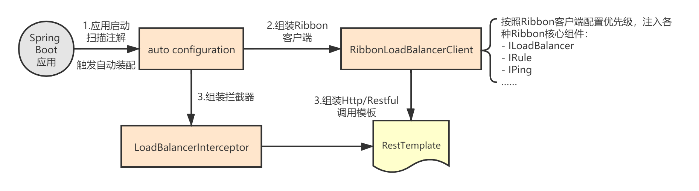
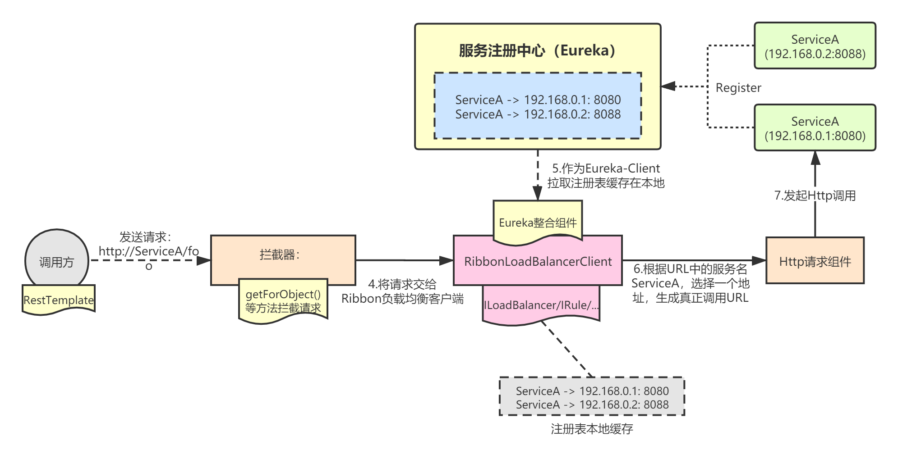

掌握了Ribbon初始化的底层原理和Eureka整合使用的流程。从本章开始，我就要开始讲解Ribbon的工作流程了。本章，我会先通过一个图讲解Ribbon与Eureka结合使用时的整体流程，后面再深入源码，讲解Ribbon的各个核心组件的底层实现。
与Eureka结合使用时，我们通常会这样写程序：
@RestController
public class ServiceBController {
@Bean
@LoadBalanced
public RestTemplate getRestTemplate() {
return new RestTemplate();
}
@GetMapping(value = "/greeting/{name}")
public String greeting(@PathVariable("name") String name) {
RestTemplate restTemplate = getRestTemplate();
// ServiceA是服务提供方向Eureka注册的应用名
return restTemplate.getForObject("http://ServiceA/sayHello/" + name, String.class);
}
}
RestTemplate就是一个Spring提供了Http RESTFUL请求工具类而已，但是@LoadBalanced是什么呢？为什么引入它就可以获得Ribbon的负载均衡功能了？
先来看下面这两张图，这是Ribbon结合Eureka使用时的整体工作流程：


@LoadBalanced注解后，会创建一个请求拦截器，并将Ribbon客户端和拦截器注入到RestTemplate中；Ribbon客户端配置的原理我已经在前面章节讲过了，本章我重点是将这个图涉及到的整体功能梳理一遍，后续章节再讲其中每一部分涉及的原理。
RestTemplate装配，其实就是给RestTemplate对象注入一个拦截器和Ribbon客户端对象。
@LoadBalanced注解，其实就是一个标记注解而已，用来标记将Ribbon客户端对象，即LoadBalancerClient，注入到RestTemplate中：
package org.springframework.cloud.client.loadbalancer;
/**
* Annotation to mark a RestTemplate bean to be configured to use a LoadBalancerClient
* @author Spencer Gibb
*/
@Target({ ElementType.FIELD, ElementType.PARAMETER, ElementType.METHOD })
@Retention(RetentionPolicy.RUNTIME)
@Documented
@Inherited
@Qualifier
public @interface LoadBalanced {
}
前面章节，我分析过Ribbon客户端的初始化流程，Spring应用启动时会通过RibbonAutoConfiguration自动装配一个默认的Ribbon客户端——RibbonLoadBalancerClient：
@Configuration
@Conditional(RibbonAutoConfiguration.RibbonClassesConditions.class)
@RibbonClients
@AutoConfigureAfter(
name = "org.springframework.cloud.netflix.eureka.EurekaClientAutoConfiguration")
@AutoConfigureBefore({ LoadBalancerAutoConfiguration.class, AsyncLoadBalancerAutoConfiguration.class })
@EnableConfigurationProperties({ RibbonEagerLoadProperties.class, ServerIntrospectorProperties.class })
public class RibbonAutoConfiguration {
@Bean
@ConditionalOnMissingBean
public SpringClientFactory springClientFactory() {
SpringClientFactory factory = new SpringClientFactory();
factory.setConfigurations(this.configurations);
return factory;
}
// Ribbon客户端
@Bean
@ConditionalOnMissingBean(LoadBalancerClient.class)
public LoadBalancerClient loadBalancerClient() {
return new RibbonLoadBalancerClient(springClientFactory());
}
}
可以看到，RibbonAutoConfiguration装配完成后，会触发LoadBalancerAutoConfiguration的自动装配。
LoadBalancerAutoConfiguration，核心功能就是给RestTemplate装配Ribbon客户端，同时设置一个Ribbon拦截器LoadBalancerInterceptor：
@Configuration(proxyBeanMethods = false)
@ConditionalOnClass(RestTemplate.class)
@ConditionalOnBean(LoadBalancerClient.class)
@EnableConfigurationProperties(LoadBalancerRetryProperties.class)
public class LoadBalancerAutoConfiguration {
// 注意这里的LoadBalanced注解
@LoadBalanced
@Autowired(required = false)
private List<RestTemplate> restTemplates = Collections.emptyList();
@Autowired(required = false)
private List<LoadBalancerRequestTransformer> transformers = Collections.emptyList();
@Bean
public SmartInitializingSingleton loadBalancedRestTemplateInitializerDeprecated(
final ObjectProvider<List<RestTemplateCustomizer>> restTemplateCustomizers) {
return () -> restTemplateCustomizers.ifAvailable(customizers -> {
for (RestTemplate restTemplate : LoadBalancerAutoConfiguration.this.restTemplates) {
for (RestTemplateCustomizer customizer : customizers) {
// 定制RestTemplate
customizer.customize(restTemplate);
}
}
});
}
@Bean
@ConditionalOnMissingBean
public LoadBalancerRequestFactory loadBalancerRequestFactory(
LoadBalancerClient loadBalancerClient) {
return new LoadBalancerRequestFactory(loadBalancerClient, this.transformers);
}
// 拦截器配置
@Configuration(proxyBeanMethods = false)
@ConditionalOnMissingClass("org.springframework.retry.support.RetryTemplate")
static class LoadBalancerInterceptorConfig {
@Bean
public LoadBalancerInterceptor ribbonInterceptor(
LoadBalancerClient loadBalancerClient,
LoadBalancerRequestFactory requestFactory) {
return new LoadBalancerInterceptor(loadBalancerClient, requestFactory);
}
@Bean
@ConditionalOnMissingBean
public RestTemplateCustomizer restTemplateCustomizer(
final LoadBalancerInterceptor loadBalancerInterceptor) {
return restTemplate -> {
List<ClientHttpRequestInterceptor> list = new ArrayList<>(
restTemplate.getInterceptors());
list.add(loadBalancerInterceptor);
// 装配拦截器，拦截器里已经组装了Ribbon客户端
restTemplate.setInterceptors(list);
};
}
}
//...
}
可以看到，最终组装出来的RestTemplate包含了一个LoadBalancerInterceptor拦截器，而拦截器里面又注入了默认的Ribbon客户端RibbonLoadBalancerClient。这样，当通过RestTemplate发送请求的时候，请求就会被拦截，然后就可以利用Ribbon来做负载均衡了。
当我们利用RestTemplate发起一个http请求时（比如restTemplate.getForObject()），这个请求首先会被LoadBalancerInterceptor拦截处理。我们来看下LoadBalancerInterceptor的源码，看看它拦截请求后到底做了哪些事情：
public class LoadBalancerInterceptor implements ClientHttpRequestInterceptor {
private LoadBalancerClient loadBalancer;
private LoadBalancerRequestFactory requestFactory;
public LoadBalancerInterceptor(LoadBalancerClient loadBalancer, LoadBalancerRequestFactory requestFactory) {
this.loadBalancer = loadBalancer;
this.requestFactory = requestFactory;
}
public LoadBalancerInterceptor(LoadBalancerClient loadBalancer) {
this(loadBalancer, new LoadBalancerRequestFactory(loadBalancer));
}
// 拦截请求
@Override
public ClientHttpResponse intercept(final HttpRequest request, final byte[] body,
final ClientHttpRequestExecution execution) throws IOException {
// 1.获取请求URL，比如http://ServiceA/sayHello
final URI originalUri = request.getURI();
// 2.解析出服务名，比如ServiceA
String serviceName = originalUri.getHost();
Assert.state(serviceName != null, "Request URI does not contain a valid hostname: " + originalUri);
// 3.将请求封装成一个LoadBalancerRequest对象，然后根据服务名发起请求
return this.loadBalancer.execute(serviceName, requestFactory.createRequest(request, body, execution));
}
}
其实内部逻辑非常简单：
从RestTemplate装配的流程可以知道，拦截器LoadBalancerInterceptor只是很薄的一层，它只是将请求交给LoadBalancerClient这个Ribbon客户端来处理。而Spring Cloud默认创建的Ribbon客户端是RibbonLoadBalancerClient。我们来看看它是如何处理请求的。
RibbonLoadBalancerClient，是在Ribbon自动装配类RibbonAutoConfiguration中装配并注入到Spring容器的，它是默认Ribbon客户端：
// RibbonAutoConfiguration.java
@Bean
@ConditionalOnMissingBean(LoadBalancerClient.class)
public LoadBalancerClient loadBalancerClient() {
return new RibbonLoadBalancerClient(springClientFactory());
}
我们看下它的具体实现，里面包含了请求的整个处理流程：
public class RibbonLoadBalancerClient implements LoadBalancerClient {
private SpringClientFactory clientFactory;
public RibbonLoadBalancerClient(SpringClientFactory clientFactory) {
this.clientFactory = clientFactory;
}
// 构造真实请求URL，也就是替换服务名称为真正的host地址
@Override
public URI reconstructURI(ServiceInstance instance, URI original) {
Assert.notNull(instance, "instance can not be null");
// 获取应用（服务） 名称
String serviceId = instance.getServiceId();
RibbonLoadBalancerContext context = this.clientFactory.getLoadBalancerContext(serviceId);
Server server = new Server(instance.getHost(), instance.getPort());
IClientConfig clientConfig = clientFactory.getClientConfig(serviceId);
ServerIntrospector serverIntrospector = serverIntrospector(serviceId);
URI uri = RibbonUtils.updateToHttpsIfNeeded(original, clientConfig,
serverIntrospector, server);
return context.reconstructURIWithServer(server, uri);
}
// 根据服务ID，选择一个Server
@Override
public ServiceInstance choose(String serviceId) {
Server server = getServer(serviceId);
if (server == null) {
return null;
}
return new RibbonServer(serviceId, server, isSecure(server, serviceId),
serverIntrospector(serviceId).getMetadata(server));
}
@Override
public <T> T execute(String serviceId, LoadBalancerRequest<T> request) throws IOException {
// 1.获取负载均衡调度器，默认是ZoneAwareLoadBalancer，在RibbonClientConfiguration中配置
ILoadBalancer loadBalancer = getLoadBalancer(serviceId)
// 2.根据负载均衡策略，获取一个Server
Server server = getServer(loadBalancer);
if (server == null) {
throw new IllegalStateException("No instances available for " + serviceId);
}
RibbonServer ribbonServer = new RibbonServer(serviceId, server, isSecure(server,
serviceId), serverIntrospector(serviceId).getMetadata(server));
return execute(serviceId, ribbonServer, request);
}
protected ILoadBalancer getLoadBalancer(String serviceId) {
// 这里通过SpringClientFactory获取，内部其实会给serviceId创建一个独立的子ApplicationContext
return this.clientFactory.getLoadBalancer(serviceId);
}
@Override
public <T> T execute(String serviceId, ServiceInstance serviceInstance, LoadBalancerRequest<T> request) throws IOException {
Server server = null;
if(serviceInstance instanceof RibbonServer) {
server = ((RibbonServer)serviceInstance).getServer();
}
if (server == null) {
throw new IllegalStateException("No instances available for " + serviceId);
}
RibbonLoadBalancerContext context = this.clientFactory.getLoadBalancerContext(serviceId);
RibbonStatsRecorder statsRecorder = new RibbonStatsRecorder(context, server);
try {
// 3.发起调用
T returnVal = request.apply(serviceInstance);
statsRecorder.recordStats(returnVal);
return returnVal;
}
catch (IOException ex) {
statsRecorder.recordStats(ex);
throw ex;
}
catch (Exception ex) {
statsRecorder.recordStats(ex);
ReflectionUtils.rethrowRuntimeException(ex);
}
return null;
}
private ServerIntrospector serverIntrospector(String serviceId) {
ServerIntrospector serverIntrospector = this.clientFactory.getInstance(serviceId,
ServerIntrospector.class);
if (serverIntrospector == null) {
serverIntrospector = new DefaultServerIntrospector();
}
return serverIntrospector;
}
protected Server getServer(String serviceId) {
return getServer(getLoadBalancer(serviceId));
}
protected Server getServer(ILoadBalancer loadBalancer) {
if (loadBalancer == null) {
return null;
}
// 根据负载均衡策略选择一个Server
return loadBalancer.chooseServer("default");
}
public static class RibbonServer implements ServiceInstance {
private final String serviceId;
private final Server server;
private final boolean secure;
private Map<String, String> metadata;
//...
}
}
上述代码，处理流程如下：
本章，我对Ribbon的整体工作流程进行了分析，上述流程中的核心是一个叫做ZoneAwareLoadBalancer的Ribbon调度管理器组件，我会在后续章节详细介绍它。